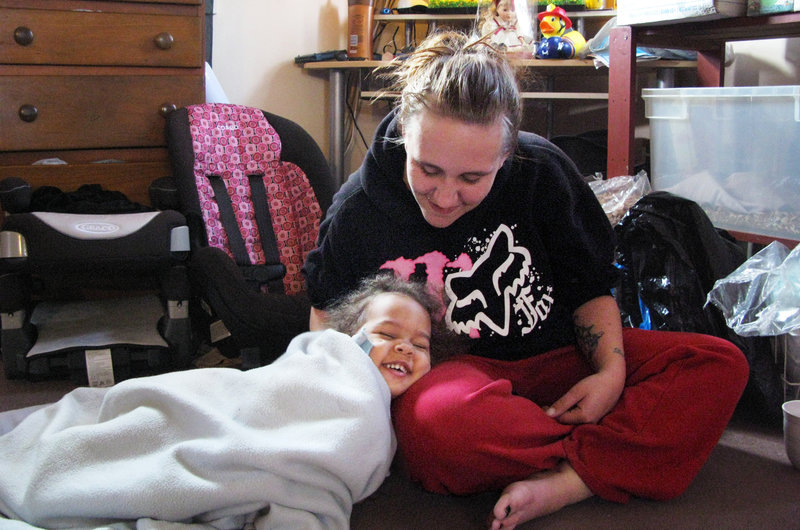

|
| Sometimes I feel like I blame my mom too much for having more kids than she could afford. She's always telling us we're lucky because we'll have each other to go to. But when we still had two of our sisters in diapers, and the pregnancy tests came out positive again and again, Judy, Sarahi and I were like, "I'm not washing the bottles this time." I asked my mom why she had so many of us. "The job of the mother is to feed and clothe them, to give them love, when maybe I didn't have time to give them each enough love," she adds. It gets me mad that my mom works so hard. And there are people out there who are just born into it. They make money like nothing. They don't have to clean houses, wake up early, drain themselves. I know I should be thinking about going to college when I graduate if I don't want that life, but I'd have to stay at home to afford it. Nine of us in a one-bedroom apartment, no privacy, one bathroom and toys everywhere. I don't know if I can make myself do it. Now I'm working 13-hour shifts, making food deliveries on a bike. Honestly, I'd rather do that and earn money for my own place. We're told, "If you work hard, you'll get results." But for my family, there haven't been any results — just survival. |
 |
| “She committed suicide a week prior to our thirtieth anniversary. Our oldest daughter had died of leukemia a couple years earlier. Holly took it extra hard. We drifted apart. We’d parse our words. Nothing was natural anymore: ‘Do we talk this way?’ ‘Do we laugh at this moment?’ ‘ Do we even have a right to laugh?’ But I still thought we were doing OK. Things weren’t like they used to be. But I still thought things were OK. We rented a hotel room for our thirtieth anniversary. I was supposed to meet her there after work. She overdosed on pills before I got there. I don’t know why she did it that way. She said in her note that she wasn’t angry, but I don’t know why she did it that way. I fell apart. I started drinking a lot and doing cocaine. I lost my job. One day I was giving a presentation after being up all night on drugs, and I just started hallucinating. I thought one of the clients was Holly. I stopped the presentation and started calling her name. The company was nice about it. They gave me a nice severance package. But I gave all the money to my kids. I’ve been on the streets ever since. It’s been eight years. My kids have tried to give me the money back but I won’t take it. I ride the subways at night. If it’s warm enough, I sleep on a bench. I read a little. I write a little. I go to the soup line in the morning. I’m just existing. I wasn’t a good husband. I wasn’t a good father. And now I’m doing penance.” |
|  |
| “Metcalf got married two years ago to a man who isn't the father of any of her children, but he recently left her for someone else. "I just feel like I get one piece of good news that makes me [think] life isn't gonna be that bad, and then here comes 30 things to basically push me right back down in this hole that I feel like I've been trying to dig myself out of for the last probably 15 years," she says. Metcalf did not just become poor. A lot of bad things happened to get her there. Like many others who are poor, she doesn't have just one or two problems, but a whole pile of them. She was raised by a single mother, who was also poor. Metcalf says they didn't always get along. And things came to a head when she was 12 years old. "My mom and I got in a fight and she told me she was going to kill me," she recalls. "And I wrapped a belt around my neck and told her I would do it for her. I ended up in a psychiatric hospital and from there I went to foster care." That meant moving from home to home to home. Metcalf says she attended 26 different schools. "Seems I'd just get my bags unpacked and it was time to move again," she says.” |
| Tyler was born into a dysfunctional family with an abusive father. If that wasn’t bad enough, four men also sexually abused him as a child. Needless to say, Tyler was a troubled teenager. One particular outburst got him kicked out of school, although he eventually did get his GED. Tyler took refuge in writing, the only thing he’d ever found solace in. He decided to take a gamble and moved to Atlanta to launch his play, I Know I’ve Been Changed. The play bombed, but Tyler didn’t quit. He tried to launch the play six times and it was never successful. The costs left Tyler living in his car, but in 1998 the play finally took off and launched his career. Tyler Perry is now one of the highest paid men in the entertainment business, where he writes, produces, directs and stars in numerous movies and television shows. |
| Liz was born in New York City in 1980 to drug addicted parents. Things hit an all time low in 1995 when Liz’s mother died due to complications from AIDS. Liz’s father, who was also HIV positive, was forced to move into a homeless shelter, which left both Liz and her sister homeless. The girls slept on 24-hour subway trains or park benches. Despite lacking a home, Liz enrolled in the prestigious Humanities Preparatory Academy in Chelsea, Manhattan. She enrolled late but still excelled, finishing high school in two years. She won a New York Times scholarship, was accepted into Harvard, attended in 1999 and then returned in 2006 and graduated in 2009. Liz Murray plans on going back again for a Doctorate in Clinical Psychology. |
| "One day a crazy looking homeless guy came to the door, and we were about to close the door on him, but my mother saw him and shouted: 'Hey Eugene!' She knew his name! Then she ran around the kitchen putting all sorts of food into tupperware, and brought it out to him. After he left, we asked my mom why she gave him so much food. She told us: 'You never know how Jesus is going to look when he shows up.' She was always saying that-- it was a spiritual thing. Then you know what happened? Two months later, that same man showed up on the door step, clean shaven, and wearing a suit. And he had an envelope with money for my mother. 'Ms. Rosa always believed in me,' he said. I'll never forget it! Eugene was his name." |